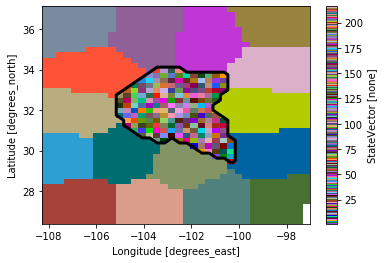
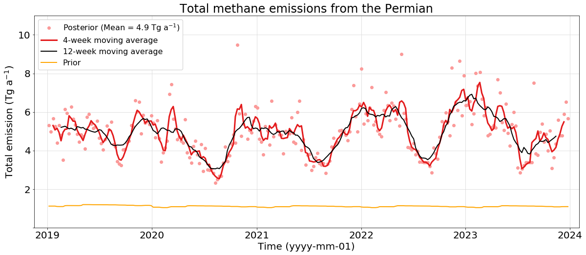
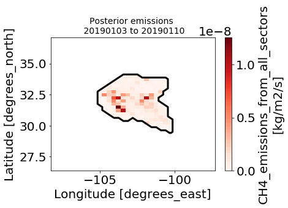
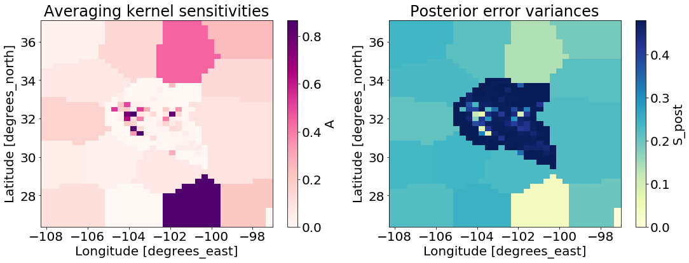
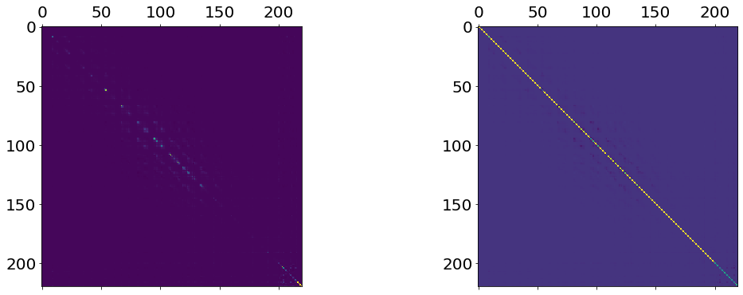
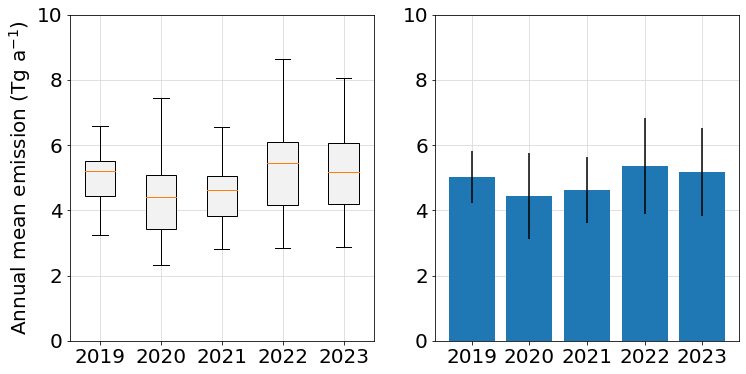
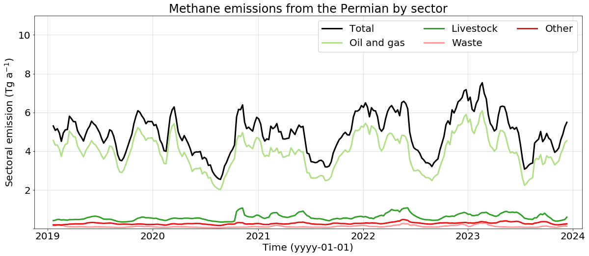
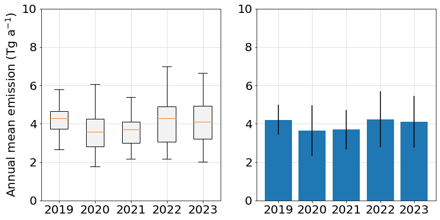

import numpy as np
import os
import xarray as xr
import pandas as pd
import datetime
import matplotlib.pyplot as plt
import colorcet as cc
from utils import moving_average, get_posterior_emissions, get_annual_emissionsWeekly Permian Basin methane emissions inferred from TROPOMI satellite data
Varon et al. (2025) [preprint] https://eartharxiv.org/repository/view/9533/
State vector
# Load state vector file
state_vector = xr.load_dataset("StateVector.nc")["StateVector"]
# Create Permian mask
# State vector includes 16 large emisson elements outside the Permian
last_permian_element = state_vector.max().values - 16
mask = state_vector <= last_permian_element# Plot state vector and Permian mask
state_vector.plot(cmap=cc.cm.glasbey_dark)
mask.plot.contour(levels=1, colors="k", linewidths=3);
Weekly total emission estimates
df = pd.read_csv("weekly_total_emissions.csv")
df.head()| period_number | period_start | period_end | dt_middle | prior_emission(Tg/a) | kf_prior_emission(Tg/a) | posterior_emission(Tg/a) | oil/gas(Tg/a) | livestock(Tg/a) | waste(Tg/a) | other(Tg/a) | |
|---|---|---|---|---|---|---|---|---|---|---|---|
| 0 | 1 | 20180705 | 20180712 | 2018-07-08 12:00:00 | 1.124008 | 1.124008 | 1.136561 | 0.902347 | 0.138857 | 0.023651 | 0.071706 |
| 1 | 2 | 20180712 | 20180719 | 2018-07-15 12:00:00 | 1.124064 | 1.136618 | 2.100002 | 1.756958 | 0.185109 | 0.027701 | 0.130233 |
| 2 | 3 | 20180719 | 20180726 | 2018-07-22 12:00:00 | 1.124029 | 2.100038 | 4.030116 | 3.490934 | 0.260054 | 0.053947 | 0.225185 |
| 3 | 4 | 20180726 | 20180802 | 2018-07-29 12:00:00 | 1.123208 | 4.029950 | 3.131313 | 2.659312 | 0.214177 | 0.066351 | 0.191471 |
| 4 | 5 | 20180802 | 20180809 | 2018-08-05 12:00:00 | 1.118234 | 3.132289 | 2.748651 | 2.316798 | 0.197543 | 0.062685 | 0.171627 |
# Plot weekly estimates
fig = plt.figure(figsize=(20,8))
plt.rcParams.update({'font.size': 20})
ax = fig.subplots(1,1)
# Name variables
dt = pd.to_datetime(df["dt_middle"])
posterior_emis = df["posterior_emission(Tg/a)"]
prior_emis = df["prior_emission(Tg/a)"]
# Colors
c5 = np.array([251,154,153])/255
c6 = np.array([227,26,28])/255
# First period to consider
# Count from 0
# fp = 26 means the first 6 months of results are discarded as Kalman filter "burn-in"
fp = 26
# line/marker options
lw = 3
ms = 12
# Time series
ax.plot(dt[fp:], posterior_emis[fp:], "o", color=c5,
label=f"Posterior (Mean = {np.round(np.mean(posterior_emis[fp:]),1)}"+" Tg a$^{-1}$)")
ax.plot(dt[fp:][2:-2], moving_average(posterior_emis[fp:], 4)[2:-2], "-", color=c6, lw=lw, ms=ms,
label="4-week moving average")
ax.plot(dt[fp:][6:-6], moving_average(posterior_emis[fp:], 12)[6:-6], "-", color="k", lw=lw-1, ms=ms,
label="12-week moving average")
ax.plot(dt[fp:], prior_emis[fp:], "-", lw=lw-1, color="orange",
label="Prior")
ax.legend(ncol=1, fontsize=16, framealpha=1)
ax.set_ylabel("Total emission (Tg a$^{-1}$)")
ax.set_ylim([0,11])
ax.set_yticks([0,2,4,6,8,10])
ax.set_yticklabels(['',2,4,6,8,10])
ax.set_xlabel("Time (yyyy-mm-01)")
ax.set_xlim([datetime.datetime(2018,11,15), datetime.datetime(2024,2,1)])
ax.set_title("Total methane emissions from the Permian")
ax.grid(color=[.85,.85,.85], zorder=1);
Map one week of posterior emissions at 25-km resolution
# Select week index
# Count from 1
# p = 27 selects the first week after a 6-month burn-in period
p = 27# Get posterior emissions for a period p
sf_post = xr.load_dataset(os.path.join("scale_factors", f"posterior_sf_period{p}.nc"))
start = df.loc[df["period_number"] == p]["period_start"].values[0]
end = df.loc[df["period_number"] == p]["period_end"].values[0]
hemco_file = os.path.join("hemco_emissions", f"HEMCO_diagnostics.{start}0000.nc")
hemco_diags = xr.load_dataset(hemco_file)
post_emis = get_posterior_emissions(hemco_diags, sf_post)
post_emis = post_emis["EmisCH4_Total"].isel(time=0, drop=True) - post_emis["EmisCH4_SoilAbsorb"]
# Remove buffer elements outside Permian, which may return unphysical negative emissions
post_emis = post_emis.where((state_vector <= last_permian_element))
# Plot the emissions
post_emis.plot(vmin=0, cmap="Reds")
mask.plot.contour(levels=1, colors="k", linewidths=3)
plt.title(f"Posterior emissions \n {start} to {end}", fontsize=14);
Inspect posterior error covariance and averaging kernel matrices for the week
# Open the gridded posterior and diagnostics (averaging kernel A and posterior error covariance matrix S) for a period p
posterior_diagnostics = xr.load_dataset(f"inversion_diagnostics/gridded_posterior_ln_period{p}.nc")
# Plot A and S_post
fig, (ax1, ax2) = plt.subplots(1,2,figsize=(18,6))
plt.rcParams.update({'font.size': 20})
posterior_diagnostics["A"].plot(cmap="RdPu", ax=ax1)
posterior_diagnostics["S_post"].plot(cmap="YlGnBu", ax=ax2)
ax1.set_title("Averaging kernel sensitivities")
ax2.set_title("Posterior error variances");
# Load the full averaging kernel (A) and posterior error covariance (S_post) matrices
full_inversion_results = xr.load_dataset(f"inversion_diagnostics/inversion_result_ln_period{p}.nc")
full_inversion_resultsxarray.Dataset
- float: 1
- nvar: 220
- xhat(nvar)float321.005562 1.012289 ... 3.6181405
array([ 1.005562 , 1.012289 , 1.0077367 , 0.99573296, 0.9966773 , 1.002722 , 1.0103632 , 1.006709 , 0.988381 , 0.5176938 , 0.97527754, 1.011624 , 1.015175 , 0.9545282 , 0.8237497 , 1.0061998 , 1.0003717 , 1.0005759 , 0.98679274, 0.9335036 , 0.9404295 , 1.0140826 , 0.9453255 , 0.6563768 , 0.94440717, 0.9918615 , 0.9955342 , 1.0017099 , 1.0196885 , 1.0175464 , 1.0283881 , 0.9998332 , 0.94500417, 0.9446419 , 0.8745407 , 0.6259899 , 0.8222838 , 1.010907 , 1.0065321 , 0.9950495 , 0.94375175, 0.9839389 , 0.88055927, 1.0169871 , 1.0351044 , 0.997616 , 0.9219573 , 0.8077339 , 0.8549198 , 0.8591607 , 1.0178955 , 1.0073266 , 1.0530595 , 1.2681355 , 1.3617417 , 0.85764945, 0.8918358 , 0.92690206, 0.948367 , 0.893078 , 0.8573028 , 0.5180533 , 0.786092 , 0.9197332 , 1.0031413 , 1.0005884 , 1.0435154 , 3.3447876 , 0.88491833, 0.82805467, 0.8099353 , 0.6833171 , 0.79851025, 0.60572624, 0.72523075, 0.8522412 , 0.90711254, 0.9552776 , 0.9754078 , 0.99859726, 1.0051026 , 1.3129084 , 1.3501716 , 0.8649777 , 0.91600984, 0.9267345 , 0.7495236 , 0.7987476 , 0.9132156 , 0.9478992 , 0.93065566, 0.9842666 , 1.024683 , 0.99888694, 0.9562343 , 0.8328019 , 1.2026651 , 1.1597184 , 0.9376826 , 0.81854326, 0.93278134, 1.386665 , 1.138969 , 1.1957778 , 0.98576224, 1.0008402 , 0.9962865 , 1.0000381 , 0.47923476, 2.4922667 , 1.1267002 , 1.1258651 , 1.0315865 , 1.0291246 , 1.0220104 , 3.1074333 , 1.8821683 , 1.0207636 , 1.0003976 , 1.1059314 , 0.8102142 , 0.7288117 , 1.0714996 , 0.87565285, 0.8703475 , 1.0269376 , 0.9215307 , 1.0050806 , 1.047007 , 1.560962 , 1.086949 , 0.9704636 , 1.0007472 , 0.9962097 , 0.66267705, 0.3881733 , 0.873468 , 0.9625874 , 0.88693607, 0.9215544 , 0.92560893, 0.97392696, 0.9872763 , 0.97877526, 0.9978707 , 0.9162623 , 1.0142239 , 0.793523 , 0.95080554, 0.9692196 , 0.92491233, 0.9145175 , 0.709052 , 0.9436897 , 0.91359824, 0.9833009 , 0.97807455, 0.97751564, 0.99659187, 0.9986771 , 0.86504495, 0.9861118 , 0.9345265 , 0.83858424, 0.9152869 , 0.94187135, 0.91389483, 0.9753547 , 0.9916197 , 0.9870866 , 0.9483178 , 0.9866767 , 0.9902402 , 0.9367397 , 0.8811776 , 0.8706394 , 0.93354994, 0.9101654 , 0.72687995, 0.97439903, 0.9581764 , 0.95340896, 0.9861823 , 0.98027235, 0.97961813, 0.9337131 , 0.9126497 , 0.9135227 , 0.9660128 , 0.92683786, 0.9211291 , 0.3572544 , 0.98170245, 0.9878481 , 0.9850644 , 0.98763216, 0.9065013 , 0.8901414 , 0.88848406, 0.86263597, -0.8476598 , 0.582345 , -0.28556505, 1.1251347 , 0.07088781, 0.8840603 , 1.1327418 , 0.15508945, -0.00761073, 0.04977752, -0.9581697 , -0.2635721 , 0.4073773 , 0.44473863, 1.2643481 , -0.06029961, 0.36115086, 2.6714125 , 1.9685329 , 3.6181405 ], dtype=float32) - lnxn(nvar)float320.0055553904 ... 3.6181405
array([ 5.55539038e-03, 1.23606911e-02, 7.71915773e-03, -4.25496930e-03, -3.31151416e-03, 2.73368461e-03, 1.03551568e-02, 6.70743268e-03, -1.16152698e-02, -5.90687931e-01, -2.41665635e-02, 1.17495907e-02, 1.54895913e-02, -3.89072187e-02, -1.91100731e-01, 6.42580679e-03, 4.34192916e-04, 1.06306502e-03, -1.27568627e-02, -6.67046532e-02, -4.91862595e-02, 2.41559483e-02, -4.56555597e-02, -4.05705273e-01, -5.69302365e-02, -8.01599026e-03, -4.41705203e-03, 1.88375381e-03, 1.96489654e-02, 1.77933127e-02, 2.93461885e-02, -2.44199487e-06, -5.41912206e-02, -5.36222346e-02, -1.30762875e-01, -4.53588217e-01, -1.93786070e-01, 1.08565195e-02, 6.52224896e-03, -4.69193142e-03, -5.49283475e-02, -1.44966692e-02, -1.00252382e-01, 1.73910931e-02, 3.62713560e-02, -8.01494054e-04, -7.97872767e-02, -2.08148435e-01, -1.55888960e-01, -1.51271909e-01, 1.77638531e-02, 7.30307074e-03, 5.19918948e-02, 3.19189280e-01, 5.15288591e-01, -1.43024415e-01, -1.13289222e-01, -7.50835538e-02, -5.21951318e-02, -1.06803022e-01, -1.50047138e-01, -6.43356383e-01, -2.39526242e-01, -8.35230052e-02, 3.14038503e-03, 5.91391523e-04, 4.28235158e-02, 1.40980780e+00, -9.14883539e-02, -1.86332479e-01, -2.08950967e-01, -3.75349730e-01, -2.20925480e-01, -4.69107896e-01, -2.94310033e-01, -1.55903265e-01, -9.68986377e-02, -4.55798842e-02, -2.45638639e-02, -1.39993371e-03, 5.38110174e-03, 3.20272863e-01, 3.38652164e-01, -1.42080426e-01, -8.54727104e-02, -7.50531331e-02, -2.72359312e-01, -1.86607465e-01, -7.55850226e-02, -2.64091250e-02, -6.72942251e-02, -1.57679729e-02, 2.46006735e-02, -1.10623077e-03, -3.33109722e-02, -2.99837608e-02, 2.11942121e-01, 2.41742656e-01, -6.01514094e-02, -1.94883510e-01, -6.18397593e-02, 4.22330141e-01, 1.41104594e-01, 1.83591694e-01, -1.36650484e-02, 8.41575151e-04, -3.64227640e-03, 6.11646473e-03, -5.52788556e-01, 1.12173724e+00, 1.40269920e-01, 1.26431644e-01, 6.30965754e-02, 3.16574052e-02, 4.06911634e-02, 1.32620645e+00, 6.65963233e-01, 2.18178444e-02, 3.99145327e-04, 2.29514405e-01, -1.72448263e-01, -2.75869012e-01, 7.19298646e-02, -5.94534073e-03, -7.08379224e-02, 2.93281339e-02, -7.83651620e-02, 5.06744571e-02, 5.21474145e-02, 5.27795911e-01, 8.56918842e-02, -2.82458756e-02, 7.58568349e-04, -1.91280455e-03, -3.59597147e-01, -8.24635386e-01, -1.28527224e-01, -3.14596891e-02, -1.17293105e-01, -7.84740523e-02, -7.60162994e-02, -2.60159448e-02, -1.26465289e-02, -2.11002864e-02, -1.98696251e-03, -5.98587766e-02, 1.45244468e-02, -2.20540389e-01, -4.87735942e-02, -2.96060350e-02, -7.47521445e-02, -8.85369182e-02, -3.32717955e-01, -5.75799309e-02, -8.93378630e-02, -1.68086383e-02, -2.20891424e-02, -2.22713072e-02, -3.07242083e-03, -1.29443605e-03, -1.33311182e-01, -1.38666499e-02, -6.70435205e-02, -1.74072742e-01, -8.74504000e-02, -5.94443940e-02, -8.81857723e-02, -2.48264913e-02, -8.38899519e-03, -1.27468752e-02, -5.24156205e-02, -1.29235759e-02, -9.69961844e-03, -6.49515763e-02, -1.25755101e-01, -1.37298062e-01, -6.83644637e-02, -9.33923945e-02, -3.07840377e-01, -2.57784519e-02, -4.22167778e-02, -4.71911915e-02, -1.38665698e-02, -1.97731312e-02, -2.04502251e-02, -6.82935193e-02, -9.07408893e-02, -8.91641453e-02, -3.43866572e-02, -7.51337856e-02, -8.16890374e-02, -9.69974875e-01, -1.84321441e-02, -1.21988496e-02, -1.50052439e-02, -1.23894615e-02, -9.73945856e-02, -1.15101844e-01, -1.16782315e-01, -1.45494089e-01, -8.47659826e-01, 5.82345009e-01, -2.85565048e-01, 1.12513471e+00, 7.08878115e-02, 8.84060323e-01, 1.13274181e+00, 1.55089453e-01, -7.61073269e-03, 4.97775152e-02, -9.58169699e-01, -2.63572097e-01, 4.07377303e-01, 4.44738626e-01, 1.26434815e+00, -6.02996126e-02, 3.61150861e-01, 2.67141247e+00, 1.96853292e+00, 3.61814046e+00], dtype=float32) - S_post(nvar, nvar)float320.48043528 ... 0.07409327
array([[ 4.80435282e-01, -3.48065464e-06, -6.76426635e-06, ..., 1.39726872e-05, -2.02529509e-06, -1.00905250e-04], [-3.48065464e-06, 4.80159819e-01, -3.16352089e-05, ..., 2.41946200e-05, 1.47273227e-06, -4.55475063e-04], [-6.76426635e-06, -3.16352089e-05, 4.80428457e-01, ..., -8.51957736e-07, -1.30393278e-06, -1.20870216e-04], ..., [ 1.39726872e-05, 2.41946200e-05, -8.51957736e-07, ..., 3.39326054e-01, -4.94157488e-04, -8.27220548e-03], [-2.02529509e-06, 1.47273227e-06, -1.30393278e-06, ..., -4.94157488e-04, 2.58487642e-01, -1.93627540e-03], [-1.00905250e-04, -4.55475063e-04, -1.20870216e-04, ..., -8.27220548e-03, -1.93627540e-03, 7.40932673e-02]], dtype=float32) - A(nvar, nvar)float323.688024e-05 ... 0.99925905
array([[ 3.68802393e-05, 7.24452684e-06, 1.40789343e-05, ..., -1.39726865e-07, 2.02529513e-08, 1.00905254e-06], [ 7.24452684e-06, 6.10252318e-04, 6.58445424e-05, ..., -2.41946196e-07, -1.47273225e-08, 4.55475083e-06], [ 1.40789343e-05, 6.58445424e-05, 5.10838254e-05, ..., 8.51957704e-09, 1.30393278e-08, 1.20870220e-06], ..., [-2.90823173e-05, -5.03579322e-05, 1.77323830e-06, ..., 9.96606767e-01, 4.94157484e-06, 8.27220574e-05], [ 4.21538653e-06, -3.06529910e-06, 2.71396516e-06, ..., 4.94157484e-06, 9.97415125e-01, 1.93627529e-05], [ 2.10021055e-04, 9.48011701e-04, 2.51575519e-04, ..., 8.27220574e-05, 1.93627529e-05, 9.99259055e-01]], dtype=float32) - DOFS(float)float3219.535948
array([19.535948], dtype=float32)
- Ja(float)float3224.597906
array([24.597906], dtype=float32)
# Visualize A and S_post
A = full_inversion_results["A"]
S_post = full_inversion_results["S_post"]
fig, (ax1, ax2) = plt.subplots(1,2,figsize=(18,6))
plt.rcParams.update({'font.size': 20})
ax1.matshow(A)
ax2.matshow(S_post)
print(f"A matrix has shape {A.shape}")
print(f"S matrix has shape {S_post.shape}")A matrix has shape (220, 220)
S matrix has shape (220, 220)
Annual total emission estimates
# Compute annual mean, median, and standard deviation of weekly total emission estimates
years = [2019, 2020, 2021, 2022, 2023]
emis, mean_emis, std_emis, median_emis = get_annual_emissions(dt, posterior_emis, years)
df_annual = pd.DataFrame(list(zip(years, mean_emis, median_emis, std_emis)), columns=["Year", "Mean(Tg/a)", "Median(Tg/a)", "Std(Tg/a)"])
df_annual| Year | Mean(Tg/a) | Median(Tg/a) | Std(Tg/a) | |
|---|---|---|---|---|
| 0 | 2019 | 5.013448 | 5.194174 | 0.792265 |
| 1 | 2020 | 4.448963 | 4.396079 | 1.322305 |
| 2 | 2021 | 4.633538 | 4.620389 | 1.013639 |
| 3 | 2022 | 5.359460 | 5.446228 | 1.460837 |
| 4 | 2023 | 5.177243 | 5.186544 | 1.358274 |
# Plot results -- bar plot and box/whisker plot
fig, (ax1, ax2) = plt.subplots(1,2,figsize=(12,6))
plt.rcParams.update({'font.size': 20})
# Box and whisker
bplot = ax1.boxplot([emis[2019], emis[2020], emis[2021], emis[2022], emis[2023]], showfliers=False, patch_artist=True)
# Fill with color
col = [.95, .95, .95]
colors = [col, col, col, col, col]
for patch, color in zip(bplot['boxes'], colors):
patch.set_facecolor(color)
ax1.set_xticklabels(years)
ax1.grid(color=[.85,.85,.85])
ax1.set_ylim([0,10])
ax1.set_ylabel("Annual mean emission (Tg a$^{-1}$)");
# Bar
ax2.bar(years, mean_emis, zorder=10)
ax2.errorbar(years, mean_emis, yerr=std_emis, fmt="none", color="k", zorder=11)
ax2.grid(color=[.85,.85,.85], zorder=0)
ax2.set_ylim([0,10])
ax2.set_xticks(years)
ax2.set_xticklabels(years);
Weekly emission estimates by sector
# Plot sectoral emission time series
fig = plt.figure(figsize=(20,8))
plt.rcParams.update({'font.size': 20})
ax = fig.subplots(1,1)
# Colors
c3 = np.array([178,223,138])/255
c4 = np.array([51,160,44])/255
c5 = np.array([251,154,153])/255
c6 = np.array([227,26,28])/255
# First period to consider
# Count from 0
# fp = 26 means the first 6 months of results are discarded as Kalman filter "burn-in"
fp = 26
# Line/marker options
lw = 3
ms = 12
# Time series
ax.plot(dt[fp:][2:-2], moving_average(posterior_emis[fp:], 4)[2:-2], "-", color="k", lw=lw, ms=ms,
label="Total")
ax.plot(dt[fp:][2:-2], moving_average(df["oil/gas(Tg/a)"][fp:], 4)[2:-2], "-", color=c3, lw=lw, ms=ms,
label="Oil and gas")
ax.plot(dt[fp:][2:-2], moving_average(df["livestock(Tg/a)"][fp:], 4)[2:-2], "-", color=c4, lw=lw, ms=ms,
label="Livestock")
ax.plot(dt[fp:][2:-2], moving_average(df["waste(Tg/a)"][fp:], 4)[2:-2], "-", color=c5, lw=lw, ms=ms,
label="Waste")
ax.plot(dt[fp:][2:-2], moving_average(df["other(Tg/a)"][fp:], 4)[2:-2], "-", color=c6, lw=lw, ms=ms,
label="Other")
ax.legend(ncol=3, fontsize=20, framealpha=1)
ax.set_ylabel("Sectoral emission (Tg a$^{-1}$)")
ax.set_ylim([0,11])
ax.set_yticks([0,2,4,6,8,10])
ax.set_yticklabels(['',2,4,6,8,10])
ax.set_xlabel("Time (yyyy-01-01)")
ax.set_xlim([datetime.datetime(2018,11,15), datetime.datetime(2024,2,1)])
ax.set_title("Methane emissions from the Permian by sector")
ax.grid(color=[.85,.85,.85], zorder=1);
Annual oil and gas emission
# Compute annual mean, median, standard deviation of weekly estimates
years = [2019, 2020, 2021, 2022, 2023]
emis_oilgas, mean_emis_oilgas, std_emis_oilgas, median_emis_oilgas = get_annual_emissions(dt, df["oil/gas(Tg/a)"], years)
df_annual_oilgas = pd.DataFrame(list(zip(years, mean_emis_oilgas, median_emis_oilgas, std_emis_oilgas)), columns=["Year", "Mean(Tg/a)", "Median(Tg/a)", "Std(Tg/a)"])
df_annual_oilgas| Year | Mean(Tg/a) | Median(Tg/a) | Std(Tg/a) | |
|---|---|---|---|---|
| 0 | 2019 | 4.206030 | 4.276309 | 0.711715 |
| 1 | 2020 | 3.634296 | 3.574803 | 1.085732 |
| 2 | 2021 | 3.688480 | 3.700013 | 0.873563 |
| 3 | 2022 | 4.235558 | 4.284356 | 1.241520 |
| 4 | 2023 | 4.105950 | 4.090884 | 1.166577 |
# Create bar plot and box and whisker plot
fig, (ax1, ax2) = plt.subplots(1,2,figsize=(12,6))
plt.rcParams.update({'font.size': 20})
# Box and whisker
bplot = ax1.boxplot([emis_oilgas[2019], emis_oilgas[2020], emis_oilgas[2021], emis_oilgas[2022], emis_oilgas[2023]], showfliers=False, patch_artist=True)
# Fill with color
col = [.95, .95, .95]
colors = [col, col, col, col, col]
for patch, color in zip(bplot['boxes'], colors):
patch.set_facecolor(color)
ax1.set_xticklabels(years)
ax1.grid(color=[.85,.85,.85])
ax1.set_ylim([0,10])
ax1.set_ylabel("Annual mean emission (Tg a$^{-1}$)");
# Bar
ax2.bar(years, mean_emis_oilgas, zorder=10)
ax2.errorbar(years, mean_emis_oilgas, yerr=std_emis, fmt="none", color="k", zorder=11)
ax2.grid(color=[.85,.85,.85], zorder=0)
ax2.set_ylim([0,10])
ax2.set_xticks(years)
ax2.set_xticklabels(years);